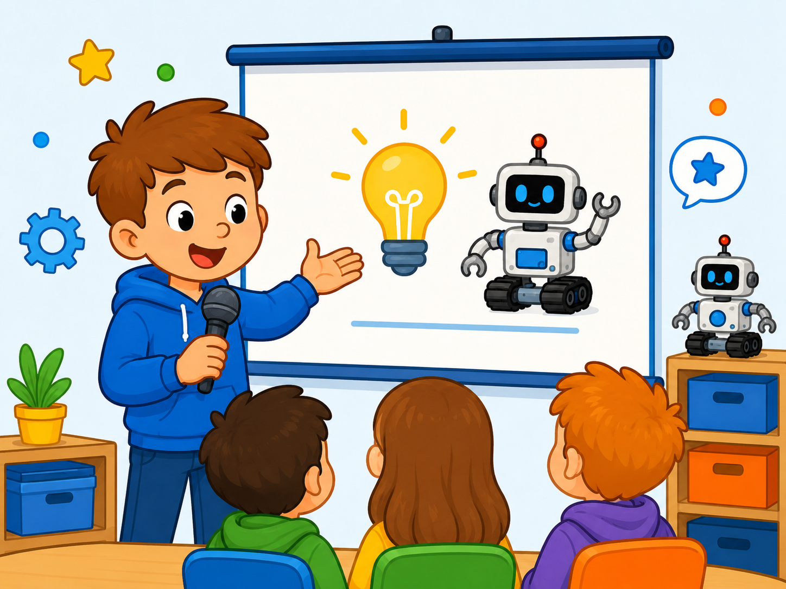
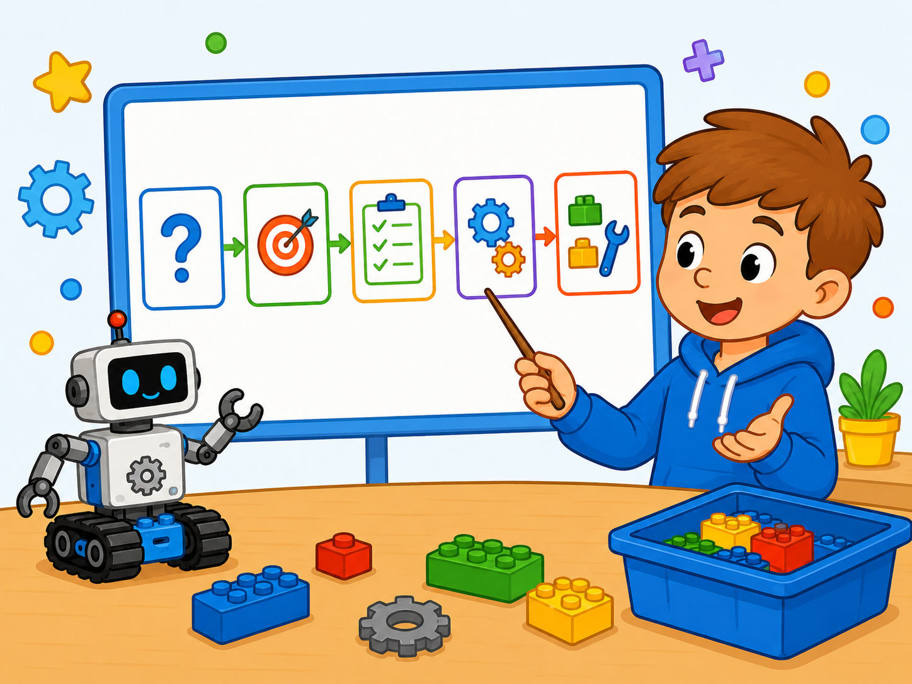
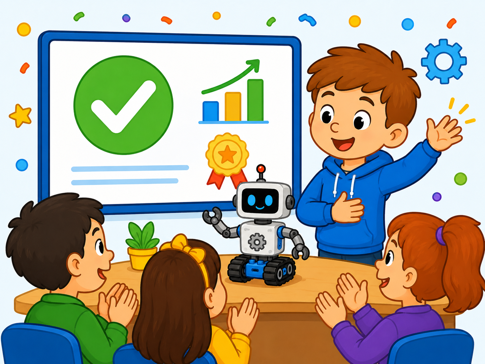
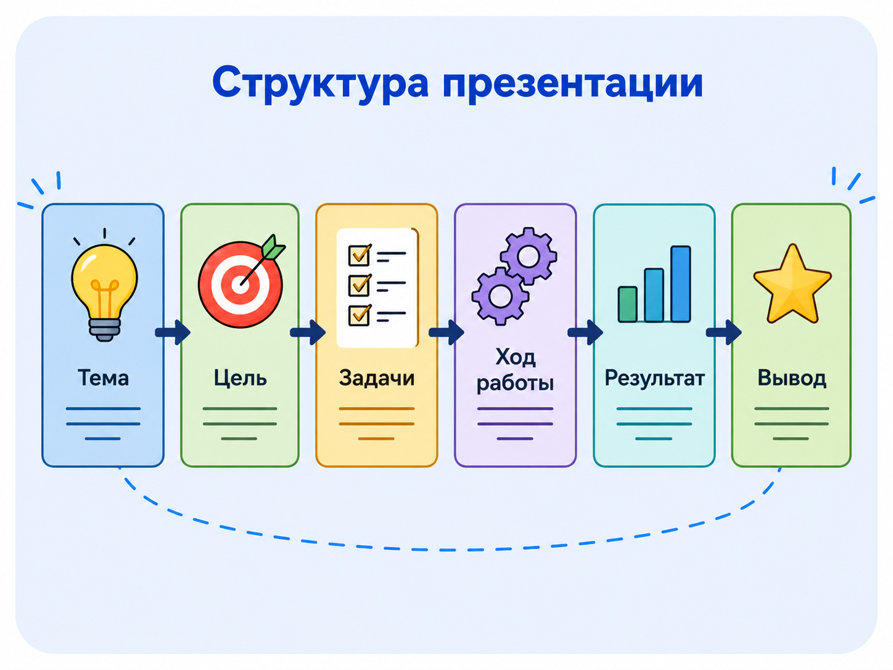
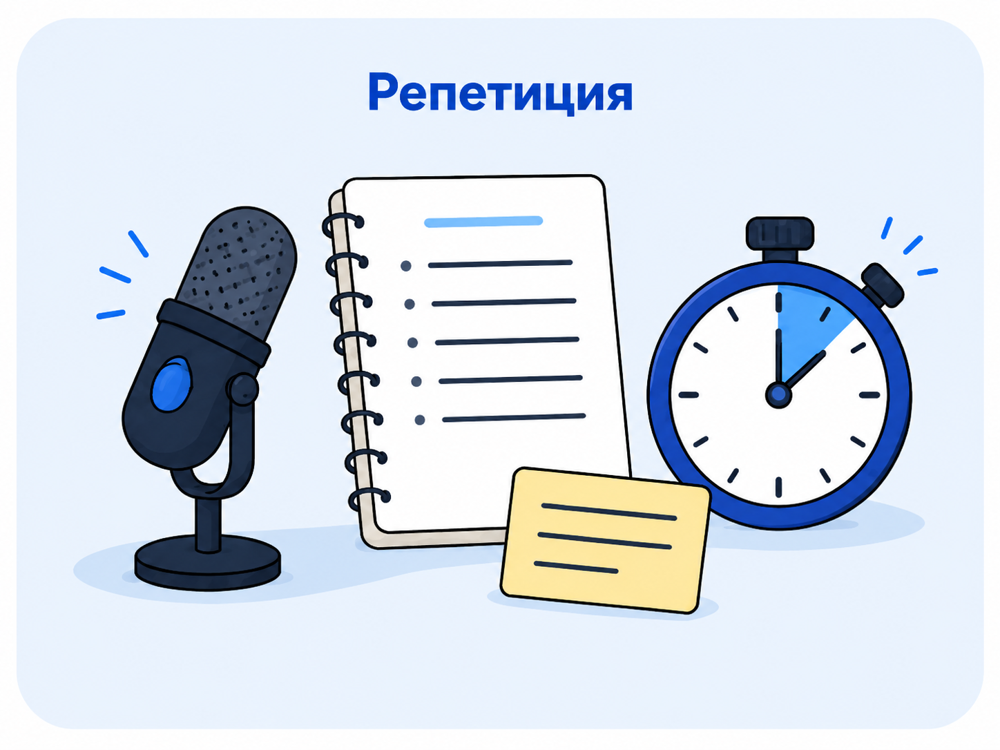
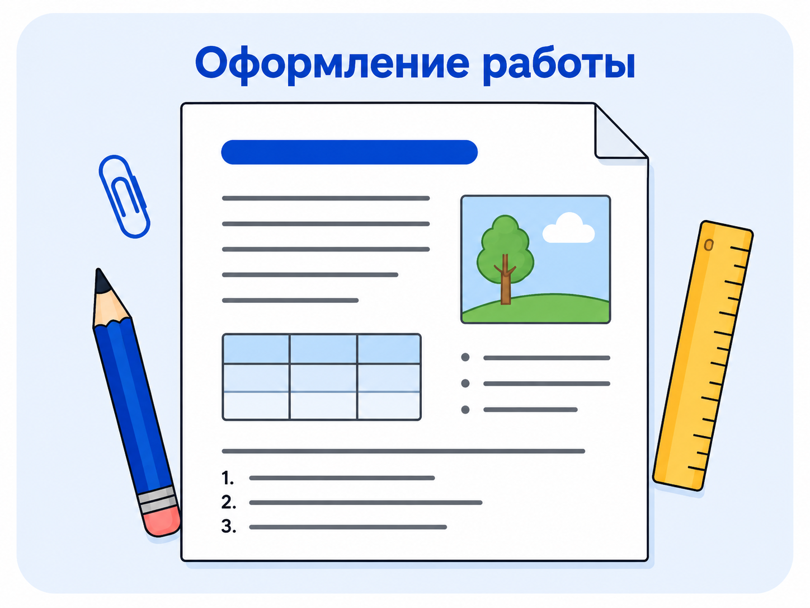

Правила публичного выступления и подготовки презентаций
Теоретический блок
Зачем нужно уметь выступать публично
Публичное выступление — это представление своей работы, проекта или исследования перед аудиторией. Во время выступления важно не только рассказать материал, но и сделать его понятным, логичным и интересным для слушателей.
В учебной деятельности публичное выступление часто используется при защите проекта, демонстрации исследования, представлении презентации или отчёта о выполненной работе. Хорошее выступление помогает показать, что обучающийся понимает свою тему, умеет объяснять основные идеи и может ответить на вопросы.
Даже хорошо выполненная работа может выглядеть слабее, если выступающий говорит неуверенно, читает весь текст со слайда или показывает перегруженную презентацию. Поэтому важно заранее подготовить не только сам проект, но и его представление.
Основные элементы успешного выступления
Что рассказывать
Выступление должно содержать главную информацию: тему, проблему, цель, задачи, ход работы, результат и выводы.
В каком порядке
Материал должен быть расположен логично: вступление, основная часть, демонстрация результата и заключение.
Как выступать
Нужно говорить спокойно, понятно, не торопиться, смотреть на аудиторию и выделять голосом важные мысли.
Структура публичного выступления
Выступление должно иметь понятную структуру. Слушателям легче воспринимать материал, если они понимают, о чём идёт речь, зачем выполнялась работа и какой результат был получен.

Вступление
Во вступлении нужно назвать тему работы, кратко объяснить её актуальность и обозначить, о чём будет выступление.

Основная часть
В основной части рассказывают о проблеме, цели, задачах, этапах выполнения проекта и использованных материалах.

Заключение
В заключении нужно показать результат работы, сделать выводы и поблагодарить аудиторию за внимание.
План выступления
| Часть выступления | Что сказать | Пример фразы |
|---|---|---|
| Приветствие | Поздороваться и представить тему | Здравствуйте, тема моей работы... |
| Актуальность | Объяснить, почему тема важна | Данная тема актуальна, потому что... |
| Цель и задачи | Назвать главный результат и шаги работы | Цель работы — ..., для её достижения были поставлены задачи... |
| Ход работы | Кратко рассказать, что было сделано | В ходе работы были изучены..., разработаны..., созданы... |
| Результат | Показать, что получилось | В результате был создан... |
| Вывод | Подвести итог выступления | Таким образом, цель работы была достигнута... |
Правила публичного выступления
Во время выступления важно помнить, что презентация является только помощником. Главную роль играет сам выступающий. Он объясняет материал, связывает слайды между собой и помогает аудитории понять смысл работы.
Говорить чётко
Нужно говорить достаточно громко, не слишком быстро и не слишком тихо. Важные мысли лучше выделять интонацией.
Смотреть на аудиторию
Не стоит всё время смотреть только в лист или на экран. Важно иногда переводить взгляд на слушателей.
Не торопиться
Слишком быстрая речь мешает пониманию. Лучше говорить спокойно и делать небольшие паузы между частями выступления.
Держаться уверенно
Нужно стоять ровно, не закрываться руками, не отворачиваться от аудитории и не прятаться за экраном.
Не читать весь доклад
Можно пользоваться планом, но лучше не читать весь текст полностью. Выступление должно звучать как объяснение.
Подготовиться заранее
Перед выступлением нужно несколько раз проговорить доклад и проверить, укладывается ли он во время.
Правила подготовки презентации
Презентация помогает сделать выступление наглядным. Она должна дополнять рассказ, а не заменять его. На слайдах лучше размещать только главные мысли, схемы, изображения, таблицы и результаты работы.
Главное правило
Один слайд — одна основная мысль. Не нужно помещать на слайд весь текст выступления.
Кратко и понятно
На слайде должны быть короткие фразы, ключевые слова и основные выводы. Большие абзацы лучше оставить для устного рассказа.
Использовать наглядность
Картинки, схемы, диаграммы и скриншоты помогают быстрее понять материал и делают презентацию интереснее.
Оформлять одинаково
Все слайды должны быть оформлены в едином стиле: одинаковые шрифты, цвета, заголовки и отступы.
Текст должен читаться
Цвет текста должен хорошо отличаться от фона. Не стоит использовать слишком яркий или пёстрый фон.
Крупный шрифт
Текст на слайдах должен быть достаточно крупным, чтобы его было видно даже с последних рядов.
Не перегружать
Лучше сделать несколько понятных слайдов, чем один слайд с большим количеством текста и картинок.
Структура презентации
Презентация должна повторять логику выступления. Сначала слушателю показывают тему и цель, затем ход работы, результаты и выводы.
Рекомендуемые слайды
| Слайд | Что разместить | Для чего нужен |
|---|---|---|
| 1. Титульный слайд | Тема, автор, группа, руководитель | Представить работу |
| 2. Актуальность | Почему тема важна | Объяснить значимость работы |
| 3. Цель и задачи | Главная цель и список задач | Показать направление работы |
| 4. Ход работы | Основные этапы выполнения | Показать, что было сделано |
| 5. Результат | Скриншоты, модель, сайт, программа, выводы | Продемонстрировать итог |
| 6. Заключение | Краткий вывод | Подвести итог выступления |
Правила оформления работы
Помимо презентации, важно правильно оформить саму работу: текстовый документ, отчёт, проектную работу или исследование. Оформление должно быть аккуратным, единым и понятным для чтения.
Разделы работы
Работа должна иметь титульный лист, содержание, введение, основную часть, заключение и список источников.
Единое оформление
В документе нужно использовать одинаковый шрифт, отступы, интервалы и оформление заголовков.
Подписи к рисункам
Все изображения, схемы и таблицы должны быть подписаны и связаны с текстом работы.
Проверь себя: что сделано неправильно?
Нажмите на ситуацию, чтобы увидеть пояснение.
Это ошибка. Слайд должен содержать только ключевые мысли, а подробное объяснение даётся устно.
Так выступление становится менее живым. Лучше использовать краткий план и объяснять материал своими словами.
Это нарушает единый стиль презентации. Лучше заранее выбрать одинаковое оформление для всех слайдов.
Практический блок
Практическая часть занятия направлена на подготовку короткого выступления и создание небольшой презентации к учебному проекту или исследованию.
Задание 1. Составление плана выступления
Цель: научиться выстраивать выступление в логической последовательности.
- Выберите тему проекта или исследования.
- Запишите, почему эта тема важна.
- Сформулируйте цель работы.
- Запишите 3–5 основных задач.
- Определите, какой результат нужно показать аудитории.
- Составьте краткий план выступления.
Подсказка: используйте структуру: приветствие, тема, актуальность, цель, задачи, ход работы, результат, вывод.
Задание 2. Подготовка текста выступления
Цель: подготовить короткий и понятный текст доклада.
- Напишите вступление на 2–3 предложения.
- Кратко объясните актуальность темы.
- Запишите цель и задачи работы.
- Опишите, что было сделано в ходе проекта.
- Сформулируйте результат и вывод.
- Прочитайте текст вслух и уберите лишние повторы.
Подсказка: выступление должно звучать как рассказ, а не как чтение сложного текста из учебника.
Задание 3. Создание структуры презентации
Цель: определить, какие слайды нужны для выступления.
- Создайте титульный слайд.
- Добавьте слайд с актуальностью темы.
- Добавьте слайд с целью и задачами.
- Добавьте 1–2 слайда с ходом работы.
- Добавьте слайд с результатами.
- Добавьте заключительный слайд с выводом.
Подсказка: для небольшого выступления обычно достаточно 6–8 слайдов.
Задание 4. Проверка оформления слайдов
Цель: научиться оценивать качество оформления презентации.
- Проверьте, читается ли текст на всех слайдах.
- Уберите слишком длинные абзацы.
- Проверьте, одинаково ли оформлены заголовки.
- Убедитесь, что изображения не растянуты и не искажены.
- Проверьте, нет ли лишних цветов и шрифтов.
- Оставьте на каждом слайде только главную мысль.
Подсказка: хороший слайд должен быть понятен за несколько секунд.
Задание 5. Репетиция выступления
Цель: подготовиться к защите проекта перед аудиторией.
- Откройте презентацию.
- Проговорите выступление вслух.
- Проверьте, укладываетесь ли вы во время.
- Отметьте места, где речь звучит неуверенно.
- Повторите выступление ещё раз.
- Подготовьте ответы на возможные вопросы.
Подсказка: лучше проговорить доклад заранее, чем впервые читать его уже перед аудиторией.
Примеры оформления и выступления
В этом разделе представлены примеры того, как можно оформить презентацию, подготовить структуру выступления и проверить готовность работы к защите.

Структура презентации
Тип: план слайдов.
Презентация должна начинаться с темы, затем показывать цель, задачи, ход работы, результат и вывод.
Оформление слайда
Тип: визуальное оформление.
На слайде должен быть крупный заголовок, краткий текст и понятное изображение или схема.

Репетиция
Тип: подготовка речи.
Перед защитой нужно несколько раз проговорить доклад и проверить время выступления.

Оформление работы
Тип: текстовый документ.
Работа должна иметь аккуратные заголовки, единый стиль, подписи к рисункам и список источников.
Вопросы для самопроверки
1. Для чего нужна презентация во время выступления?
Презентация помогает наглядно представить материал, показать структуру, изображения, схемы, результаты и выводы работы.
2. Почему нельзя размещать на слайде весь текст доклада?
Большой текст трудно читать. Слайд должен содержать только основные мысли, а подробное объяснение даётся устно.
3. Какая структура должна быть у выступления?
Выступление должно включать вступление, актуальность, цель и задачи, ход работы, результат, вывод и завершение.
4. Что значит единый стиль презентации?
Это значит, что на всех слайдах используются одинаковые шрифты, цвета, отступы, заголовки и общий принцип оформления.
5. Почему важно репетировать выступление?
Репетиция помогает говорить увереннее, проверить время выступления и заранее исправить сложные места в докладе.
6. Что должно быть на титульном слайде?
На титульном слайде размещают тему работы, имя автора, группу, имя руководителя и название образовательной организации.
7. Что нужно показать на слайде с результатом?
На слайде с результатом можно показать готовый продукт, скриншоты, модель, программу, таблицу, схему или основные выводы.
8. Почему важно смотреть на аудиторию?
Контакт с аудиторией делает выступление более уверенным и помогает слушателям лучше воспринимать материал.
9. Как понять, что слайд перегружен?
Слайд перегружен, если на нём слишком много текста, мелкий шрифт, много разных цветов, лишние картинки или трудно выделить главную мысль.
10. Что нужно проверить перед защитой работы?
Нужно проверить презентацию, текст выступления, время доклада, работу файлов, читаемость слайдов и готовность ответить на вопросы.